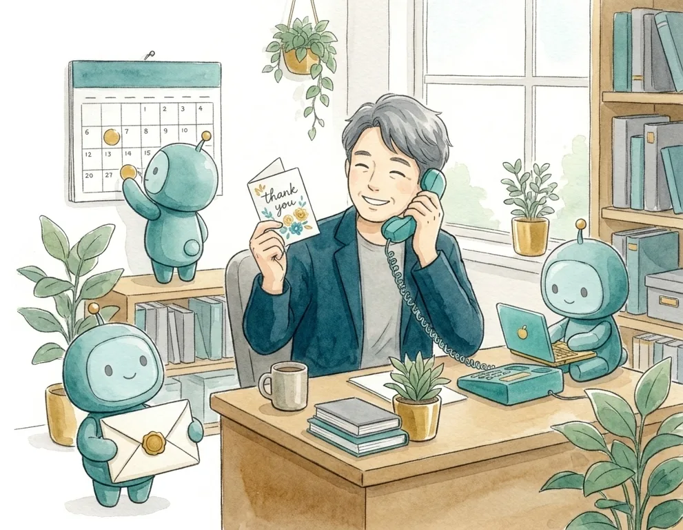
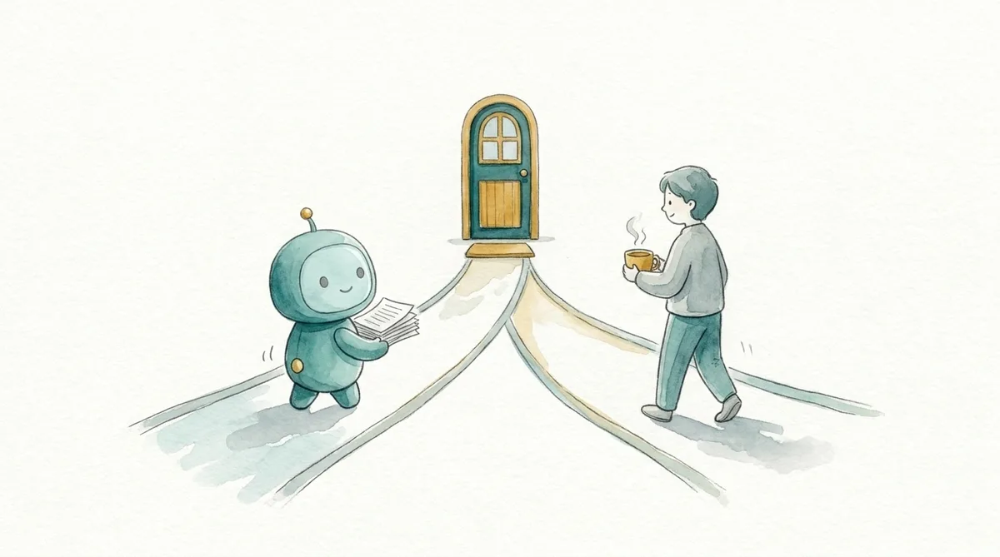
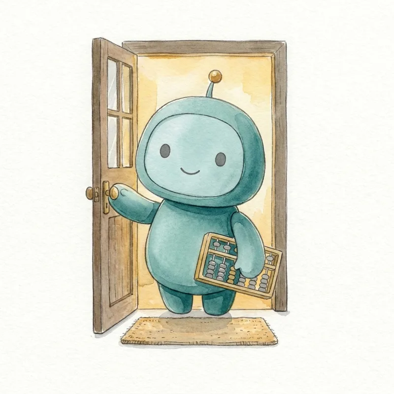

コメント「AI」の1枚
社員ゼロの会社で、お客様の案内と事務をAIが毎日回しています

やったのは「人がやる仕事」と「AIに渡す仕事」を分けただけ。全体像を1枚にしました。
最後に3問答えると、あなたの会社で最初に渡せる仕事が出ます。
1日2本投稿が自動で出る
手間ゼロ勉強会の申込〜前日リマインド
朝7時その日の予定と数字が届く
数字は実際に動いている仕組みのものだけを書いています。
全体像：左がAI、右が人

AIがやる
人（僕）がやる
1入口：毎日の発信
伸びた投稿の型を学んで、翌週の案を書くThreads・Instagram・音声配信。1日2本は自動で出る
載せるかどうかを決める実話は自分の言葉に直す
2受付：合言葉にDMで返す
コメントの合言葉に資料をDM7日以内の人にだけ。1日4回巡回
こちらからの勧誘DMはしない返事が来たら人が読む
3案内：勉強会の申込からリマインドまで
申込→日程確定→前日と当日朝のリマインド→キャンセル受付→カレンダー登録人の手ゼロ
当日、話すここは人にしかできない
4準備：提案書と面談メモ
相談内容から下書きを作る比較表・数字の整理
数字の最終確認、お客様の名前を呼ぶ最初の挨拶と最後のお礼は自分で書く
5事務：記録・報告
面談後の記録、週次の数字、朝の予定毎朝7時に届く
読んで、1つ決める5分
6学習：毎週、数字を見て直す
届いた数・保存・問い合わせを集計月曜の朝にレポート
何を増やすかを決めるAIは増やし方の案を出すだけ
先に決めた「AIにやらせない3つ」
- お客様の名前を呼ぶのは僕。最初の挨拶と、最後のお礼は自分で書く
- 断るのも僕。お引き受けできない相談は、人が理由を添えて返す
- お金の最終判断はAIに聞かない。数字の下書きは任せる。決めるのは人
この3つを先に決めたから、残りを安心して渡せました。順番が逆だと「AIに何をさせていいか分からない」で止まります。
あなたの会社だと、どこから？

3つ答えると、最初に渡す仕事が出ます0 / 3
✓
1 / 3
お仕事は？
✓
2 / 3
いちばん時間を取られている仕事は？
✓
3 / 3
1日の問い合わせや連絡の数は？
最初に渡すなら、ここです🎉

仕組みの中身と導入の流れは、こちらにまとめています。
営業と事務をAIで回す仕組みを見る「自社の場合はどこから？」をもう少し具体的に知りたい方は、InstagramのDMに会社名と、上で選んだ仕事を一言ください。僕が直接お返事します。
 森川満章｜お金のプロ×AI 相談2,000件・講演3,000人
森川満章｜お金のプロ×AI 相談2,000件・講演3,000人
Instagram @morikawa_fulfull